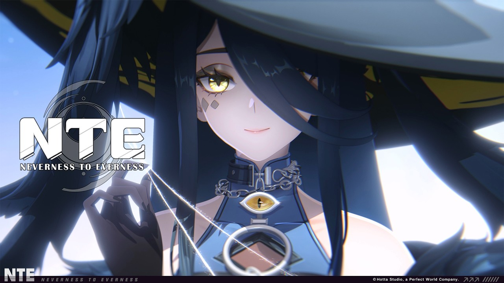

Panduan Neverness to Everness
Panduan Neverness to Everness: combat supernatural di Talonland, tips awal, dan materi resmi yang bisa ditonton.

📄 Ringkasan Cepat
📜 Informasi Dasar
| Developer | Perfect World Games |
|---|---|
| Genre | Urban Open World, Action RPG |
| Rilis | Dalam pengembangan |
| Platform | PC, mobile, konsol (cek pengumuman resmi) |
| Model | Free-to-play dengan microtransaction |
| Website resmi | https://nte.perfectworld.com/intermed/mktkol/en/index.html |
ℹ Tentang Game
Neverness to Everness adalah urban open world dengan tema supernatural. Berbeda dari game HoYoverse,developers-nya adalah Perfect World Games.
Karena game ini masih dalam tahap perkembangan, informasi di halaman ini berdasarkan materi resmi yang sudah dipublikasikan. Detail fitur bisa berubah setelah rilis.
- Setting urban modern dengan elemen supernatural.
- Combat menggabungkan gerakan cepat dan strategi, dengan fokus pada positioning dan timing.
- Karakter dikisahkan dari simbol yin-yang yang menjadi tema visual utama.
- Cek website resmi untuk pengumuman versi, platform, dan tanggal rilis terbaru.
⚔ Tips Combat
Combat Neverness to Everness menggabungkan aksi real-time dengan elemen tactical. Artinya refleks penting, tapi positioning juga menentukan.
Dari materi resmi terlihat beberapa karakter punya gaya bertarung yang berbeda, dan kombinasi tim akan menentukan keefektifan.
- Mulai dari Combat Showcase resmi untuk memahami gaya bertarung tiap karakter.
- Timing dodge sering lebih penting daripada jumlah damage.
- Manfaatkan ruang di sekitar musuh, jangan hanya bertarung di area sempit.
- Pelajari satu karakter sampai mastery dulu sebelum pindah ke karakter lain.
🏠 Tips untuk Pemula
Karena Neverness to Everness masih dipantau perkembangannya, saran untuk pemula perlu dibaca sebagai catatan sementara.
Yang paling penting adalah menunggu informasi dan berita resmi dari developer.
- Ikuti channel official NTE di YouTube untuk pv, pengumuman, dan tutorial.
- Baca pengumuman patch sebelum gameplay session panjang, karena|fingerprint aturan bisa berubah.
- Baca pengumuman patch sebelum sesi main panjang, karena aturan bisa berubah.
- Bergabung dengan komunitas untuk minta saran build dari pemain lain yang sudah lama bermain.
📺 Tonton Materi Resmi
Konten resmi Neverness to Everness bisa ditonton langsung di halaman streaming Starwise.
Halaman itu berisi combat showcase, character pv, dan animated short dari channel resmi NTE.
- Combat Showcase Blackbird, salah satu materi combat terbaru.
- Blackbird Character PV, menjelaskan latar karakter.
- Animated short untuk memahami tone cerita.
- Semua materi berasal dari channel official NTE.
Catatan: angka pity, jadwal, dan mekanisme di halaman ini bisa berubah setelah patch. Cek pengumuman resmi bila perlu informasi paling mutakhir.